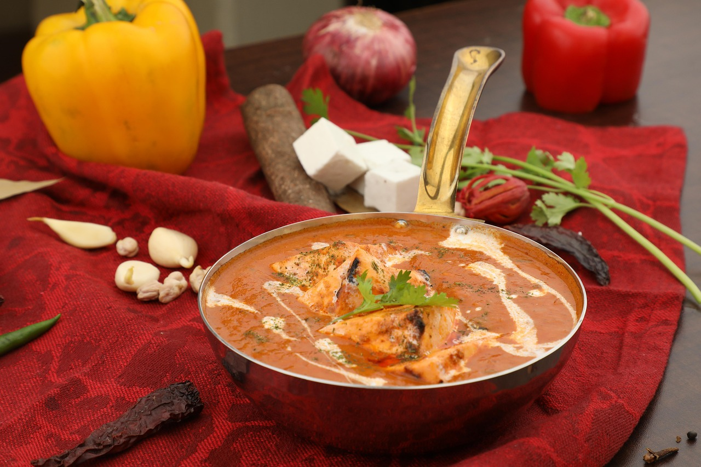

How to Make Paneer Butter Masala

Ingredients
- 200g Paneer (cottage cheese)
- 2 tbsp Butter
- 2 Tomatoes (pureed)
- 1 Onion (chopped)
- 1 tsp Ginger-Garlic Paste
- Spices (Garam masala, chili powder, turmeric, salt)
- Fresh cream
Cooking Steps
- Heat butter in a pan and sauté onions till golden brown.
- Add ginger-garlic paste and cook for 1 minute.
- Add tomato puree and cook till oil separates.
- Add all spices and mix well.
- Add paneer cubes and cook for 5 minutes.
- Finish with fresh cream and serve hot with naan or rice.
Watch Recipe Video